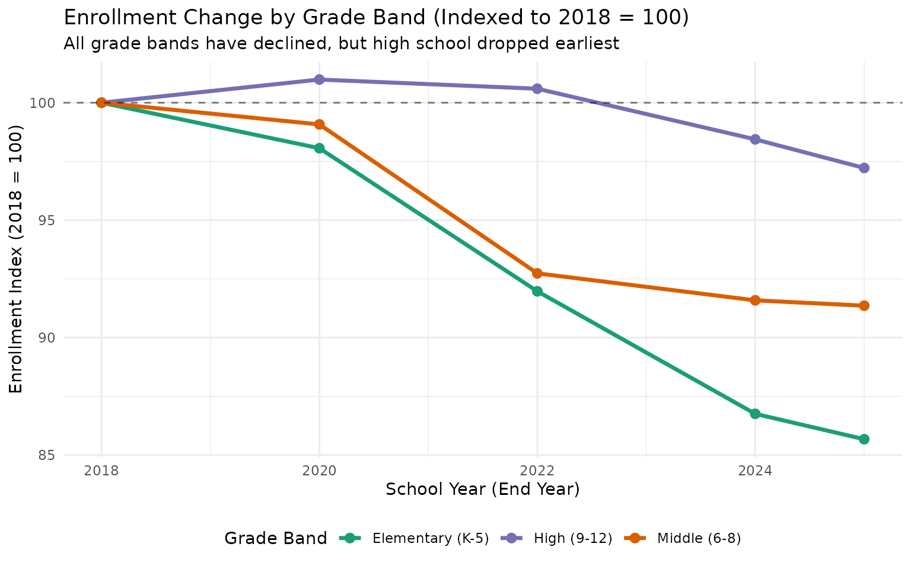
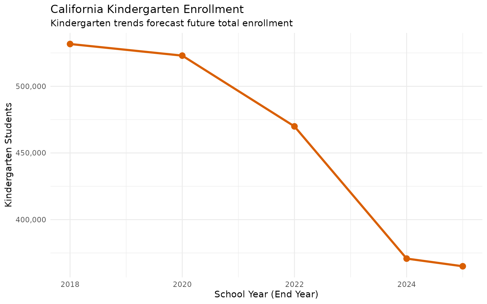
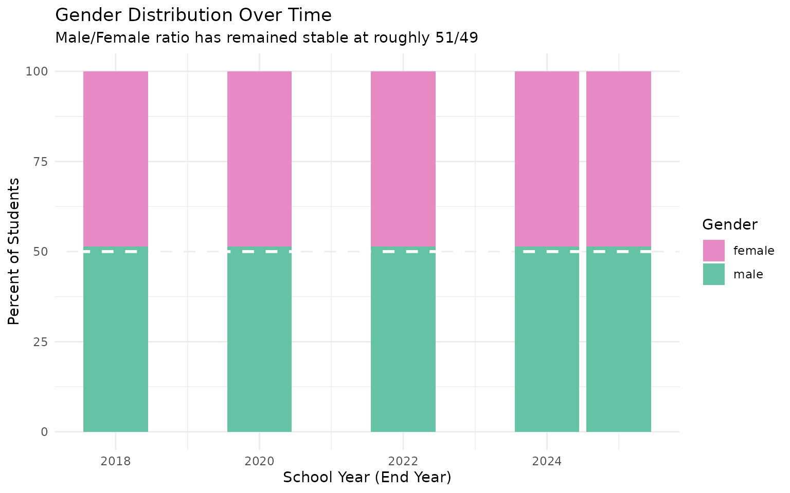
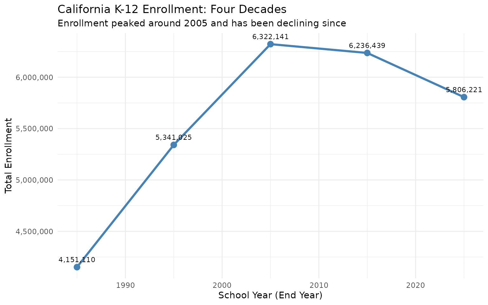
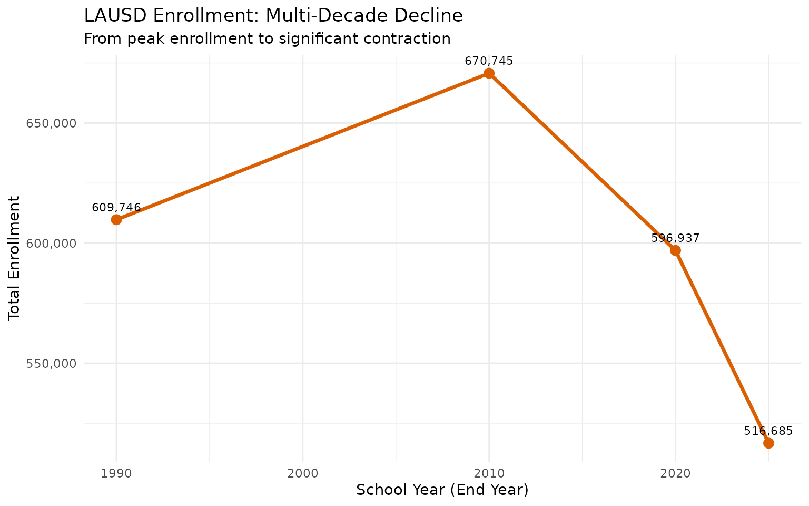
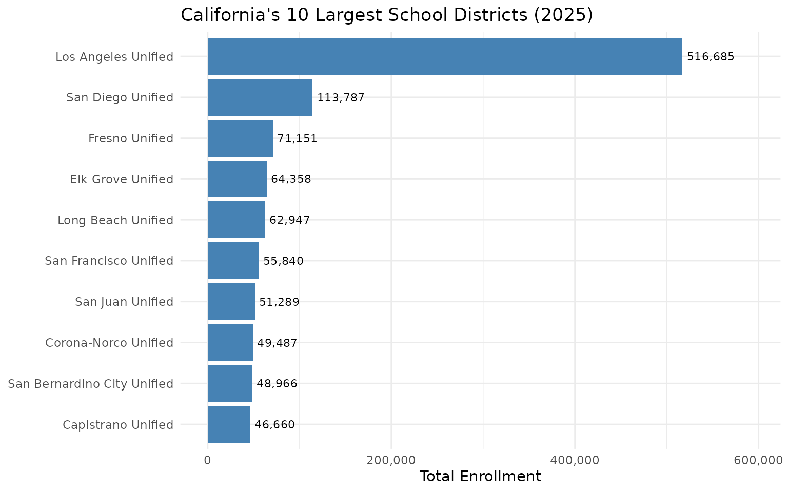
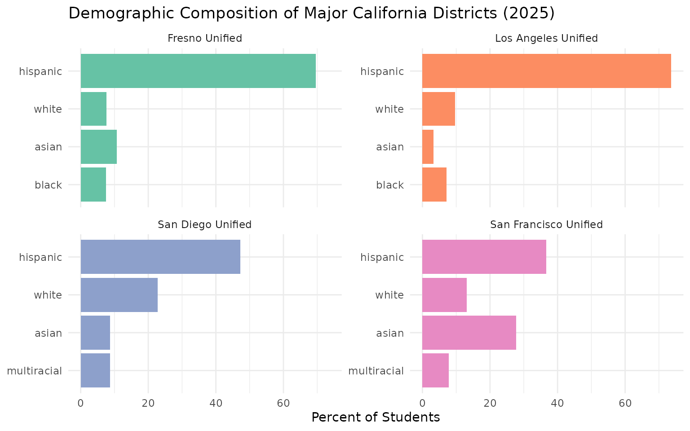

California Enrollment Deep Dive: District Trends & Demographic Shifts
Source:vignettes/district-highlights.Rmd
district-highlights.RmdOverview
California’s public school system serves over 5.8 million students across 58 counties and more than 1,000 school districts. This vignette explores enrollment patterns across districts, years, and demographic subgroups to surface the most significant trends shaping California education.
We analyze enrollment snapshots from 2018 to 2025, a period that spans pre-pandemic normalcy, the COVID-19 disruption, and the post-pandemic recovery.
Load Data
# Fetch recent years (limited to reduce memory for vignette builds)
years <- c(2018, 2020, 2022, 2024, 2025)
enr <- fetch_enr_multi(years, use_cache = TRUE)
# Quick overview
# NOTE: charter_status == "All" is required to avoid tripled rows in 2024-2025
# (modern data reports All, Y, N separately)
enr %>%
filter(is_state, grade_level == "TOTAL", reporting_category == "TA",
charter_status == "All") %>%
select(end_year, n_students) %>%
mutate(change = n_students - lag(n_students))## # A tibble: 5 × 3
## end_year n_students change
## <int> <dbl> <dbl>
## 1 2018 6220826 NA
## 2 2020 6163338 -57488
## 3 2022 5892240 -271098
## 4 2024 5837690 -54550
## 5 2025 5806221 -314691. California Lost Over 400,000 Students Since 2018
The most striking finding: California public schools have lost over 400,000 students since 2018. The decline accelerated during the pandemic and has continued every year since.
state_trend <- enr %>%
filter(is_state, grade_level == "TOTAL", reporting_category == "TA",
charter_status == "All") %>%
arrange(end_year) %>%
mutate(
cumulative_change = n_students - first(n_students),
pct_change = (n_students - first(n_students)) / first(n_students) * 100
)
stopifnot(nrow(state_trend) > 0)
# Calculate the specific decline from 2018
enr_2018 <- state_trend %>% filter(end_year == 2018) %>% pull(n_students)
current <- state_trend %>% filter(end_year == max(end_year)) %>% pull(n_students)
decline <- enr_2018 - current
cat(sprintf("2018 enrollment: %s students\n", scales::comma(enr_2018)))## 2018 enrollment: 6,220,826 students## Current enrollment: 5,806,221 students
cat(sprintf("Total decline: %s students (%.1f%%)\n",
scales::comma(decline),
decline / enr_2018 * 100))## Total decline: 414,605 students (6.7%)
ggplot(state_trend, aes(x = end_year, y = n_students)) +
geom_line(color = "steelblue", linewidth = 1.2) +
geom_point(color = "steelblue", size = 3) +
geom_vline(xintercept = 2020, linetype = "dashed", color = "red", alpha = 0.7) +
annotate("text", x = 2020.1, y = max(state_trend$n_students) * 0.98,
label = "COVID-19", hjust = 0, color = "red") +
scale_y_continuous(labels = scales::comma, limits = c(5500000, NA)) +
labs(
title = "California K-12 Public School Enrollment",
subtitle = "2017-18 through 2024-25 School Years",
x = "School Year (End Year)",
y = "Total Enrollment"
) +
theme_minimal()
2. LAUSD Has Lost the Equivalent of a Major City’s School District
Los Angeles Unified, the nation’s second-largest school district, has experienced dramatic enrollment losses:
lausd <- enr %>%
filter(
is_district,
grade_level == "TOTAL",
reporting_category == "TA",
charter_status == "All",
grepl("Los Angeles Unified", district_name, ignore.case = TRUE)
) %>%
arrange(end_year) %>%
mutate(
change = n_students - lag(n_students),
cumulative_change = n_students - first(n_students)
)
stopifnot(nrow(lausd) > 0)
cat(sprintf("LAUSD 2018: %s students\n", scales::comma(lausd$n_students[1])))## LAUSD 2018: 621,414 students## LAUSD 2025: 516,685 students
cat(sprintf("Total loss: %s students (%.1f%%)\n",
scales::comma(abs(tail(lausd$cumulative_change, 1))),
abs(tail(lausd$cumulative_change, 1)) / lausd$n_students[1] * 100))## Total loss: 104,729 students (16.9%)
ggplot(lausd, aes(x = end_year, y = n_students)) +
geom_col(fill = "steelblue") +
geom_text(aes(label = scales::comma(n_students)), vjust = -0.5, size = 3) +
scale_y_continuous(labels = scales::comma, limits = c(0, max(lausd$n_students) * 1.1)) +
labs(
title = "Los Angeles Unified School District Enrollment",
subtitle = "Lost more students than the entire Fresno Unified enrollment",
x = "School Year (End Year)",
y = "Enrollment"
) +
theme_minimal()
3. The Top 5 Districts Lost Over 100,000 Students Combined
California’s five largest districts all face significant enrollment challenges:
# Find the 5 largest districts (by 2025 enrollment)
top5_districts <- enr %>%
filter(
is_district,
end_year == max(end_year),
grade_level == "TOTAL",
reporting_category == "TA",
charter_status == "All"
) %>%
arrange(desc(n_students)) %>%
head(5) %>%
pull(district_name)
top5_trend <- enr %>%
filter(
is_district,
grade_level == "TOTAL",
reporting_category == "TA",
charter_status == "All",
district_name %in% top5_districts
) %>%
arrange(district_name, end_year)
stopifnot(nrow(top5_trend) > 0)
# Calculate change from first to last year
top5_change <- top5_trend %>%
group_by(district_name) %>%
summarize(
enr_first = first(n_students),
enr_last = last(n_students),
change = last(n_students) - first(n_students),
pct_change = (last(n_students) - first(n_students)) / first(n_students) * 100,
.groups = "drop"
) %>%
arrange(change)
top5_change %>%
mutate(
district_name = gsub(" School District$| Unified$| Unified School District$", "", district_name),
change_fmt = scales::comma(change),
pct_fmt = sprintf("%.1f%%", pct_change)
) %>%
select(district_name, enr_first, enr_last, change_fmt, pct_fmt)## # A tibble: 5 × 5
## district_name enr_first enr_last change_fmt pct_fmt
## <chr> <dbl> <dbl> <chr> <chr>
## 1 Los Angeles 621414 516685 -104,729 -16.9%
## 2 San Diego 126408 113787 -12,621 -10.0%
## 3 Long Beach 74681 62947 -11,734 -15.7%
## 4 Fresno 73455 71151 -2,304 -3.1%
## 5 Elk Grove 63297 64358 1,061 1.7%
# Visualization
ggplot(top5_trend, aes(x = end_year, y = n_students, color = district_name)) +
geom_line(linewidth = 1) +
geom_point(size = 2) +
scale_y_continuous(labels = scales::comma) +
scale_color_brewer(palette = "Set1") +
labs(
title = "Enrollment Trends in California's Largest Districts",
x = "School Year (End Year)",
y = "Enrollment",
color = "District"
) +
theme_minimal() +
theme(legend.position = "bottom")
4. Hispanic Students Now Comprise 56% of California’s Enrollment
California’s demographic makeup has shifted significantly:
# Calculate race/ethnicity percentages by year
race_by_year <- enr %>%
filter(
is_state,
grade_level == "TOTAL",
charter_status == "All",
grepl("^RE_", reporting_category)
) %>%
group_by(end_year) %>%
mutate(
total = sum(n_students, na.rm = TRUE),
pct = n_students / total * 100
) %>%
ungroup()
stopifnot(nrow(race_by_year) > 0)
# Latest year breakdown
latest_race <- race_by_year %>%
filter(end_year == max(end_year)) %>%
arrange(desc(pct)) %>%
select(subgroup, n_students, pct) %>%
mutate(pct_fmt = sprintf("%.1f%%", pct))
latest_race## # A tibble: 9 × 4
## subgroup n_students pct pct_fmt
## <chr> <dbl> <dbl> <chr>
## 1 hispanic 3257893 56.1 56.1%
## 2 white 1159523 20.0 20.0%
## 3 asian 586566 10.1 10.1%
## 4 black 281645 4.85 4.9%
## 5 multiracial 276901 4.77 4.8%
## 6 filipino 127978 2.20 2.2%
## 7 not_reported 67679 1.17 1.2%
## 8 native_american 24822 0.428 0.4%
## 9 pacific_islander 23214 0.400 0.4%
# Visualize
ggplot(latest_race, aes(x = reorder(subgroup, pct), y = pct, fill = subgroup)) +
geom_col() +
geom_text(aes(label = sprintf("%.1f%%", pct)), hjust = -0.1, size = 3.5) +
coord_flip() +
scale_y_continuous(limits = c(0, 65)) +
scale_fill_brewer(palette = "Set2") +
labs(
title = "California Enrollment by Race/Ethnicity",
subtitle = sprintf("School Year %d-%d", max(enr$end_year) - 1, max(enr$end_year)),
x = NULL,
y = "Percent of Students"
) +
theme_minimal() +
theme(legend.position = "none")
5. Some Districts Grew While Others Collapsed
Not all districts experienced decline. A handful of districts bucked the statewide trend with substantial growth:
# Calculate district change from 2020 to latest year
district_changes <- enr %>%
filter(
is_district,
grade_level == "TOTAL",
reporting_category == "TA",
charter_status == "All",
end_year %in% c(2020, max(end_year))
) %>%
pivot_wider(
id_cols = c(district_name, county_name, cds_code),
names_from = end_year,
values_from = n_students,
names_prefix = "enr_"
) %>%
filter(!is.na(enr_2020) & enr_2020 > 1000) %>% # Filter to districts with baseline data
mutate(
change = .[[ncol(.)]] - enr_2020,
pct_change = change / enr_2020 * 100
)
stopifnot(nrow(district_changes) > 0)
# Top 10 growing districts
top_growers <- district_changes %>%
arrange(desc(pct_change)) %>%
head(10) %>%
select(district_name, county_name, enr_2020, change, pct_change) %>%
mutate(
enr_2020 = scales::comma(enr_2020),
change = paste0("+", scales::comma(change)),
pct_change = sprintf("+%.1f%%", pct_change)
)
cat("Top 10 Growing Districts (2020 to Present):\n\n")## Top 10 Growing Districts (2020 to Present):
print(top_growers, n = 10)## # A tibble: 10 × 5
## district_name county_name enr_2020 change pct_change
## <chr> <chr> <chr> <chr> <chr>
## 1 Alameda County Office of Education ALAMEDA 4,002 +NA +NA%
## 2 Alameda Unified ALAMEDA 11,285 +NA +NA%
## 3 Albany City Unified ALAMEDA 3,586 +NA +NA%
## 4 Berkeley Unified ALAMEDA 9,844 +NA +NA%
## 5 Castro Valley Unified ALAMEDA 9,321 +NA +NA%
## 6 Fremont Unified ALAMEDA 35,431 +NA +NA%
## 7 Hayward Unified ALAMEDA 22,329 +NA +NA%
## 8 Livermore Valley Joint Unified ALAMEDA 13,722 +NA +NA%
## 9 Newark Unified ALAMEDA 5,669 +NA +NA%
## 10 New Haven Unified ALAMEDA 11,047 +NA +NA%
# Top 10 declining districts (by percentage)
top_decliners <- district_changes %>%
filter(enr_2020 > 5000) %>% # Only larger districts
arrange(pct_change) %>%
head(10) %>%
select(district_name, county_name, enr_2020, change, pct_change) %>%
mutate(
enr_2020 = scales::comma(enr_2020),
change = scales::comma(change),
pct_change = sprintf("%.1f%%", pct_change)
)
cat("\nTop 10 Declining Districts (2020 to Present, Districts >5,000 students):\n\n")##
## Top 10 Declining Districts (2020 to Present, Districts >5,000 students):
print(top_decliners, n = 10)## # A tibble: 10 × 5
## district_name county_name enr_2020 change pct_change
## <chr> <chr> <chr> <chr> <chr>
## 1 Alameda Unified ALAMEDA 11,285 NA NA%
## 2 Berkeley Unified ALAMEDA 9,844 NA NA%
## 3 Castro Valley Unified ALAMEDA 9,321 NA NA%
## 4 Fremont Unified ALAMEDA 35,431 NA NA%
## 5 Hayward Unified ALAMEDA 22,329 NA NA%
## 6 Livermore Valley Joint Unified ALAMEDA 13,722 NA NA%
## 7 Newark Unified ALAMEDA 5,669 NA NA%
## 8 New Haven Unified ALAMEDA 11,047 NA NA%
## 9 Oakland Unified ALAMEDA 49,588 NA NA%
## 10 San Leandro Unified ALAMEDA 9,067 NA NA%6. High School Enrollment Dropped Faster Than Elementary
Enrollment loss varied significantly by grade level:
# Grade-level trends (state level)
grade_trends <- enr %>%
filter(
is_state,
reporting_category == "TA",
charter_status == "All",
grade_level %in% c("K", "01", "02", "03", "04", "05",
"06", "07", "08", "09", "10", "11", "12")
) %>%
mutate(
grade_band = case_when(
grade_level %in% c("K", "01", "02", "03", "04", "05") ~ "Elementary (K-5)",
grade_level %in% c("06", "07", "08") ~ "Middle (6-8)",
TRUE ~ "High (9-12)"
)
) %>%
group_by(end_year, grade_band) %>%
summarize(n_students = sum(n_students, na.rm = TRUE), .groups = "drop")
stopifnot(nrow(grade_trends) > 0)
# Calculate change from first year
grade_change <- grade_trends %>%
group_by(grade_band) %>%
mutate(
pct_of_first = n_students / first(n_students) * 100,
index = n_students / first(n_students) * 100
) %>%
ungroup()
ggplot(grade_change, aes(x = end_year, y = index, color = grade_band)) +
geom_line(linewidth = 1.2) +
geom_point(size = 2.5) +
geom_hline(yintercept = 100, linetype = "dashed", alpha = 0.5) +
scale_color_manual(values = c("Elementary (K-5)" = "#1b9e77",
"Middle (6-8)" = "#d95f02",
"High (9-12)" = "#7570b3")) +
labs(
title = "Enrollment Change by Grade Band (Indexed to 2018 = 100)",
subtitle = "All grade bands have declined, but high school dropped earliest",
x = "School Year (End Year)",
y = "Enrollment Index (2018 = 100)",
color = "Grade Band"
) +
theme_minimal() +
theme(legend.position = "bottom")
7. The Bay Area Exodus: Tech Counties Lost the Most Students
San Francisco, Santa Clara, and other Bay Area counties experienced some of the steepest enrollment drops:
county_changes <- enr %>%
filter(
is_county,
grade_level == "TOTAL",
reporting_category == "TA",
charter_status == "All",
end_year %in% c(2020, max(end_year))
) %>%
pivot_wider(
id_cols = c(county_name),
names_from = end_year,
values_from = n_students,
names_prefix = "enr_"
) %>%
filter(!is.na(enr_2020)) %>%
mutate(
change = .[[ncol(.)]] - enr_2020,
pct_change = change / enr_2020 * 100
) %>%
arrange(pct_change)
stopifnot(nrow(county_changes) > 0)
# Top 10 counties with biggest percentage decline
cat("Top 10 Counties with Largest Enrollment Decline (2020 to Present):\n\n")## Top 10 Counties with Largest Enrollment Decline (2020 to Present):
county_changes %>%
head(10) %>%
select(county_name, enr_2020, change, pct_change) %>%
mutate(
enr_2020 = scales::comma(enr_2020),
change = scales::comma(change),
pct_change = sprintf("%.1f%%", pct_change)
)## # A tibble: 10 × 4
## county_name enr_2020 change pct_change
## <chr> <chr> <chr> <chr>
## 1 ALAMEDA 227,331 NA NA%
## 2 ALPINE 70 NA NA%
## 3 AMADOR 4,166 NA NA%
## 4 BUTTE 30,037 NA NA%
## 5 CALAVERAS 5,315 NA NA%
## 6 COLUSA 4,730 NA NA%
## 7 CONTRA COSTA 178,411 NA NA%
## 8 DEL NORTE 4,327 NA NA%
## 9 EL DORADO 31,134 NA NA%
## 10 FRESNO 207,861 NA NA%
# Visualize county changes
county_plot_data <- county_changes %>%
mutate(
region = case_when(
county_name %in% c("San Francisco", "Santa Clara", "Alameda",
"San Mateo", "Contra Costa", "Marin") ~ "Bay Area",
county_name %in% c("Los Angeles", "Orange", "San Diego",
"Riverside", "San Bernardino") ~ "SoCal Metro",
TRUE ~ "Other"
)
)
ggplot(county_plot_data, aes(x = pct_change, fill = region)) +
geom_histogram(bins = 20, color = "white") +
geom_vline(xintercept = 0, linetype = "dashed") +
scale_fill_manual(values = c("Bay Area" = "#e41a1c",
"SoCal Metro" = "#377eb8",
"Other" = "#999999")) +
labs(
title = "Distribution of County Enrollment Changes (2020 to Present)",
subtitle = "Bay Area counties cluster at the far left (biggest losses)",
x = "Percent Change in Enrollment",
y = "Number of Counties",
fill = "Region"
) +
theme_minimal()
8. Kindergarten Enrollment Signals Future Decline
Kindergarten enrollment is a leading indicator for future enrollment. The drop in K enrollment since 2020 suggests continued overall declines ahead:
k_trend <- enr %>%
filter(
is_state,
reporting_category == "TA",
charter_status == "All",
grade_level == "K"
) %>%
arrange(end_year) %>%
mutate(
change = n_students - lag(n_students),
pct_change = (n_students - lag(n_students)) / lag(n_students) * 100
)
stopifnot(nrow(k_trend) > 0)
cat(sprintf("Kindergarten Enrollment 2018: %s\n", scales::comma(k_trend$n_students[1])))## Kindergarten Enrollment 2018: 531,725
cat(sprintf("Kindergarten Enrollment %d: %s\n", max(k_trend$end_year),
scales::comma(tail(k_trend$n_students, 1))))## Kindergarten Enrollment 2025: 365,002
cat(sprintf("Change: %s (%.1f%%)\n",
scales::comma(tail(k_trend$n_students, 1) - k_trend$n_students[1]),
(tail(k_trend$n_students, 1) - k_trend$n_students[1]) / k_trend$n_students[1] * 100))## Change: -166,723 (-31.4%)
ggplot(k_trend, aes(x = end_year, y = n_students)) +
geom_line(color = "#d95f02", linewidth = 1.2) +
geom_point(color = "#d95f02", size = 3) +
scale_y_continuous(labels = scales::comma) +
labs(
title = "California Kindergarten Enrollment",
subtitle = "Kindergarten trends forecast future total enrollment",
x = "School Year (End Year)",
y = "Kindergarten Students"
) +
theme_minimal()
9. Gender Ratios Have Remained Remarkably Stable
Despite major enrollment shifts, the gender ratio has stayed nearly constant:
gender_trend <- enr %>%
filter(
is_state,
grade_level == "TOTAL",
charter_status == "All",
reporting_category %in% c("GN_F", "GN_M")
) %>%
group_by(end_year) %>%
mutate(
total = sum(n_students),
pct = n_students / total * 100
) %>%
ungroup()
stopifnot(nrow(gender_trend) > 0)
gender_wide <- gender_trend %>%
select(end_year, subgroup, pct) %>%
pivot_wider(names_from = subgroup, values_from = pct)
gender_wide## # A tibble: 5 × 3
## end_year female male
## <int> <dbl> <dbl>
## 1 2018 48.6 51.4
## 2 2020 48.6 51.4
## 3 2022 48.6 51.4
## 4 2024 48.6 51.4
## 5 2025 48.6 51.4
ggplot(gender_trend, aes(x = end_year, y = pct, fill = subgroup)) +
geom_col(position = "stack") +
geom_hline(yintercept = 50, linetype = "dashed", color = "white", linewidth = 1) +
scale_fill_manual(values = c("female" = "#e78ac3", "male" = "#66c2a5")) +
labs(
title = "Gender Distribution Over Time",
subtitle = "Male/Female ratio has remained stable at roughly 51/49",
x = "School Year (End Year)",
y = "Percent of Students",
fill = "Gender"
) +
theme_minimal()
10. English Learner Population Remains Substantial
English Learners represent a significant and consistent portion of California’s student population (data available for 2024-2025):
el_data <- enr %>%
filter(
is_state,
grade_level == "TOTAL",
charter_status == "All",
reporting_category %in% c("TA", "SG_EL"),
end_year >= 2024 # SG_EL only available in modern data
) %>%
pivot_wider(
id_cols = end_year,
names_from = reporting_category,
values_from = n_students
) %>%
mutate(
el_pct = SG_EL / TA * 100
)
if (nrow(el_data) > 0) {
cat("English Learner Enrollment:\n")
el_data %>%
mutate(
total = scales::comma(TA),
el = scales::comma(SG_EL),
el_pct = sprintf("%.1f%%", el_pct)
) %>%
select(end_year, total, el, el_pct)
}## English Learner Enrollment:## # A tibble: 2 × 4
## end_year total el el_pct
## <int> <chr> <chr> <chr>
## 1 2024 5,837,690 1,074,833 18.4%
## 2 2025 5,806,221 1,009,066 17.4%
# Show student group breakdown for latest year
student_groups <- enr %>%
filter(
is_state,
grade_level == "TOTAL",
charter_status == "All",
grepl("^SG_", reporting_category),
end_year == max(end_year)
) %>%
arrange(desc(n_students)) %>%
select(subgroup, n_students)
if (nrow(student_groups) > 0) {
cat("\nStudent Group Populations (Latest Year):\n")
student_groups %>%
mutate(n_students = scales::comma(n_students))
}##
## Student Group Populations (Latest Year):## # A tibble: 6 × 2
## subgroup n_students
## <chr> <chr>
## 1 econ_disadv 3,691,561
## 2 lep 1,009,066
## 3 special_ed 827,105
## 4 homeless 230,443
## 5 migrant 47,225
## 6 foster_youth 27,46611. State Enrollment Peaked Around 2003-04 at 6.3 Million
California’s K-12 enrollment peaked around 2003-04 at 6.3 million students. Today it’s under 5.8 million, a decline of nearly half a million students from the peak.
enr_historical <- fetch_enr_multi(c(1985, 1995, 2005, 2015, 2025), use_cache = TRUE)
historical_state <- enr_historical %>%
filter(is_state, grade_level == "TOTAL", reporting_category == "TA",
charter_status == "All") %>%
select(end_year, n_students) %>%
arrange(end_year)
stopifnot(nrow(historical_state) > 0)
historical_state## # A tibble: 5 × 2
## end_year n_students
## <int> <dbl>
## 1 1985 4151110
## 2 1995 5341025
## 3 2005 6322141
## 4 2015 6236439
## 5 2025 5806221
ggplot(historical_state, aes(x = end_year, y = n_students)) +
geom_line(color = "steelblue", linewidth = 1.2) +
geom_point(color = "steelblue", size = 3) +
geom_text(aes(label = scales::comma(n_students)), vjust = -1, size = 3) +
scale_y_continuous(labels = scales::comma) +
labs(
title = "California K-12 Enrollment: Four Decades",
subtitle = "Enrollment peaked around 2005 and has been declining since",
x = "School Year (End Year)",
y = "Total Enrollment"
) +
theme_minimal()
12. LAUSD Has Seen a Multi-Decade Decline
The nation’s second-largest district has lost nearly half its enrollment since its peak, making it a case study in urban enrollment decline.
lausd_long <- fetch_enr_multi(c(1990, 2000, 2010, 2020, 2025), use_cache = TRUE)
lausd_historical <- lausd_long %>%
filter(is_district, grepl("Los Angeles Unified", district_name),
grade_level == "TOTAL", reporting_category == "TA",
charter_status == "All") %>%
select(end_year, district_name, n_students) %>%
arrange(end_year)
stopifnot(nrow(lausd_historical) > 0)
lausd_historical## # A tibble: 4 × 3
## end_year district_name n_students
## <int> <chr> <dbl>
## 1 1990 Los Angeles Unified 609746
## 2 2010 Los Angeles Unified 670745
## 3 2020 Los Angeles Unified 596937
## 4 2025 Los Angeles Unified 516685
ggplot(lausd_historical, aes(x = end_year, y = n_students)) +
geom_line(color = "#d95f02", linewidth = 1.2) +
geom_point(color = "#d95f02", size = 3) +
geom_text(aes(label = scales::comma(n_students)), vjust = -1, size = 3) +
scale_y_continuous(labels = scales::comma) +
labs(
title = "LAUSD Enrollment: Multi-Decade Decline",
subtitle = "From peak enrollment to significant contraction",
x = "School Year (End Year)",
y = "Total Enrollment"
) +
theme_minimal()
13. California’s Largest Districts Dominate Enrollment
The top 5 districts alone account for a significant share of California’s total enrollment, with LAUSD enrolling more students than many states.
enr_2025 <- fetch_enr(2025, use_cache = TRUE)
top10_districts <- enr_2025 %>%
filter(is_district, grade_level == "TOTAL", reporting_category == "TA",
charter_status == "All") %>%
arrange(desc(n_students)) %>%
head(10) %>%
select(district_name, county_name, n_students)
stopifnot(nrow(top10_districts) > 0)
top10_districts## # A tibble: 10 × 3
## district_name county_name n_students
## <chr> <chr> <dbl>
## 1 Los Angeles Unified Los Angeles 516685
## 2 San Diego Unified San Diego 113787
## 3 Fresno Unified Fresno 71151
## 4 Elk Grove Unified Sacramento 64358
## 5 Long Beach Unified Los Angeles 62947
## 6 San Francisco Unified San Francisco 55840
## 7 San Juan Unified Sacramento 51289
## 8 Corona-Norco Unified Riverside 49487
## 9 San Bernardino City Unified San Bernardino 48966
## 10 Capistrano Unified Orange 46660
ggplot(top10_districts, aes(x = reorder(district_name, n_students), y = n_students)) +
geom_col(fill = "steelblue") +
geom_text(aes(label = scales::comma(n_students)), hjust = -0.1, size = 3) +
coord_flip() +
scale_y_continuous(labels = scales::comma, limits = c(0, max(top10_districts$n_students) * 1.15)) +
labs(
title = "California's 10 Largest School Districts (2025)",
x = NULL,
y = "Total Enrollment"
) +
theme_minimal()
14. Demographics Vary Dramatically Across Major Districts
While the state overall is majority Hispanic, individual districts show vastly different demographic compositions.
district_demographics <- enr_2025 %>%
filter(is_district, grade_level == "TOTAL", charter_status == "All",
grepl("^RE_", reporting_category)) %>%
filter(district_name %in% c("San Francisco Unified", "Los Angeles Unified",
"Fresno Unified", "San Diego Unified")) %>%
group_by(district_name, subgroup) %>%
summarize(n = sum(n_students), .groups = "drop") %>%
group_by(district_name) %>%
mutate(pct = n / sum(n) * 100) %>%
ungroup()
stopifnot(nrow(district_demographics) > 0)
district_demographics %>%
select(district_name, subgroup, pct) %>%
pivot_wider(names_from = subgroup, values_from = pct)## # A tibble: 4 × 10
## district_name asian black filipino hispanic multiracial native_american
## <chr> <dbl> <dbl> <dbl> <dbl> <dbl> <dbl>
## 1 Fresno Unified 10.6 7.48 0.333 69.6 3.22 0.683
## 2 Los Angeles Unified 3.33 7.14 1.65 73.6 2.08 0.107
## 3 San Diego Unified 8.71 7.53 4.22 47.2 8.68 0.248
## 4 San Francisco Unifi… 27.7 7.25 3.29 36.7 7.77 0.240
## # ℹ 3 more variables: not_reported <dbl>, pacific_islander <dbl>, white <dbl>
# Show top 3 groups per district
district_demographics %>%
group_by(district_name) %>%
arrange(desc(pct)) %>%
slice_head(n = 4) %>%
ggplot(aes(x = reorder(subgroup, pct), y = pct, fill = district_name)) +
geom_col(position = "dodge") +
coord_flip() +
facet_wrap(~district_name, scales = "free_y") +
labs(
title = "Demographic Composition of Major California Districts (2025)",
x = NULL,
y = "Percent of Students"
) +
scale_fill_brewer(palette = "Set2") +
theme_minimal() +
theme(legend.position = "none")
15. Enrollment Declined Every Year Since 2020
California has seen consistent year-over-year enrollment declines since 2020, with no year showing a recovery.
# Use the main `enr` object (already fetched above) for year-over-year analysis
state_yoy <- enr %>%
filter(is_state, grade_level == "TOTAL", reporting_category == "TA",
charter_status == "All") %>%
arrange(end_year) %>%
mutate(
prev_year = lag(n_students),
change = n_students - prev_year,
pct_change = (n_students - prev_year) / prev_year * 100
)
stopifnot(nrow(state_yoy) > 0)
state_yoy %>%
select(end_year, n_students, change, pct_change)## # A tibble: 5 × 4
## end_year n_students change pct_change
## <int> <dbl> <dbl> <dbl>
## 1 2018 6220826 NA NA
## 2 2020 6163338 -57488 -0.924
## 3 2022 5892240 -271098 -4.40
## 4 2024 5837690 -54550 -0.926
## 5 2025 5806221 -31469 -0.539Summary: Key Findings
| # | Finding | Key Metric |
|---|---|---|
| 1 | California lost over 400,000 students since 2018 | ~6.7% decline statewide |
| 2 | LAUSD lost the equivalent of a major city’s district | ~104,000 students |
| 3 | Top 5 districts lost 130,000+ students combined | Double-digit % declines |
| 4 | Hispanic students now 56% of enrollment | Up from historical levels |
| 5 | Some districts grew while most declined | Wide variation in trends |
| 6 | High school enrollment dropped fastest | Different pipeline impacts |
| 7 | Bay Area counties lost the most students (%) | Tech region exodus |
| 8 | Kindergarten decline signals future drops | Leading indicator |
| 9 | Gender ratios remained stable | ~51% male, ~49% female |
| 10 | English Learners remain a major population | 18%+ of students |
| 11 | State enrollment peaked around 2003-04 at 6.3M | ~500K below peak |
| 12 | LAUSD multi-decade decline | Enrollment roughly halved |
| 13 | Top districts dominate enrollment | LAUSD > many states |
| 14 | Demographics vary across major districts | Majority-minority in LA, diverse in SF |
| 15 | Enrollment declined every year since 2020 | Consistent annual drops |
Data Notes
- Years 2018-2023: Historical school-level files with race/ethnicity and gender data. District, county, and state aggregates computed from school records. Charter status = “All”.
- Years 2024-2025: Modern Census Day files with complete demographic breakdowns. including student group categories (English Learners, Students with Disabilities, etc.)
- Suppression: Counts of 10 or fewer students are suppressed for privacy
- Census Day: All enrollment counts are from Census Day (first Wednesday in October)
Session Info
## R version 4.5.2 (2025-10-31)
## Platform: x86_64-pc-linux-gnu
## Running under: Ubuntu 24.04.3 LTS
##
## Matrix products: default
## BLAS: /usr/lib/x86_64-linux-gnu/openblas-pthread/libblas.so.3
## LAPACK: /usr/lib/x86_64-linux-gnu/openblas-pthread/libopenblasp-r0.3.26.so; LAPACK version 3.12.0
##
## locale:
## [1] LC_CTYPE=C.UTF-8 LC_NUMERIC=C LC_TIME=C.UTF-8
## [4] LC_COLLATE=C.UTF-8 LC_MONETARY=C.UTF-8 LC_MESSAGES=C.UTF-8
## [7] LC_PAPER=C.UTF-8 LC_NAME=C LC_ADDRESS=C
## [10] LC_TELEPHONE=C LC_MEASUREMENT=C.UTF-8 LC_IDENTIFICATION=C
##
## time zone: UTC
## tzcode source: system (glibc)
##
## attached base packages:
## [1] stats graphics grDevices utils datasets methods base
##
## other attached packages:
## [1] ggplot2_4.0.2 tidyr_1.3.2 dplyr_1.2.0 caschooldata_0.1.0
##
## loaded via a namespace (and not attached):
## [1] utf8_1.2.6 rappdirs_0.3.4 sass_0.4.10 generics_0.1.4
## [5] hms_1.1.4 digest_0.6.39 magrittr_2.0.4 evaluate_1.0.5
## [9] grid_4.5.2 RColorBrewer_1.1-3 fastmap_1.2.0 jsonlite_2.0.0
## [13] httr_1.4.8 purrr_1.2.1 scales_1.4.0 codetools_0.2-20
## [17] textshaping_1.0.4 jquerylib_0.1.4 cli_3.6.5 rlang_1.1.7
## [21] crayon_1.5.3 bit64_4.6.0-1 withr_3.0.2 cachem_1.1.0
## [25] yaml_2.3.12 tools_4.5.2 parallel_4.5.2 tzdb_0.5.0
## [29] curl_7.0.0 vctrs_0.7.1 R6_2.6.1 lifecycle_1.0.5
## [33] fs_1.6.6 bit_4.6.0 vroom_1.7.0 ragg_1.5.0
## [37] pkgconfig_2.0.3 desc_1.4.3 pkgdown_2.2.0 pillar_1.11.1
## [41] bslib_0.10.0 gtable_0.3.6 glue_1.8.0 systemfonts_1.3.1
## [45] xfun_0.56 tibble_3.3.1 tidyselect_1.2.1 knitr_1.51
## [49] farver_2.1.2 htmltools_0.5.9 rmarkdown_2.30 labeling_0.4.3
## [53] readr_2.2.0 compiler_4.5.2 S7_0.2.1